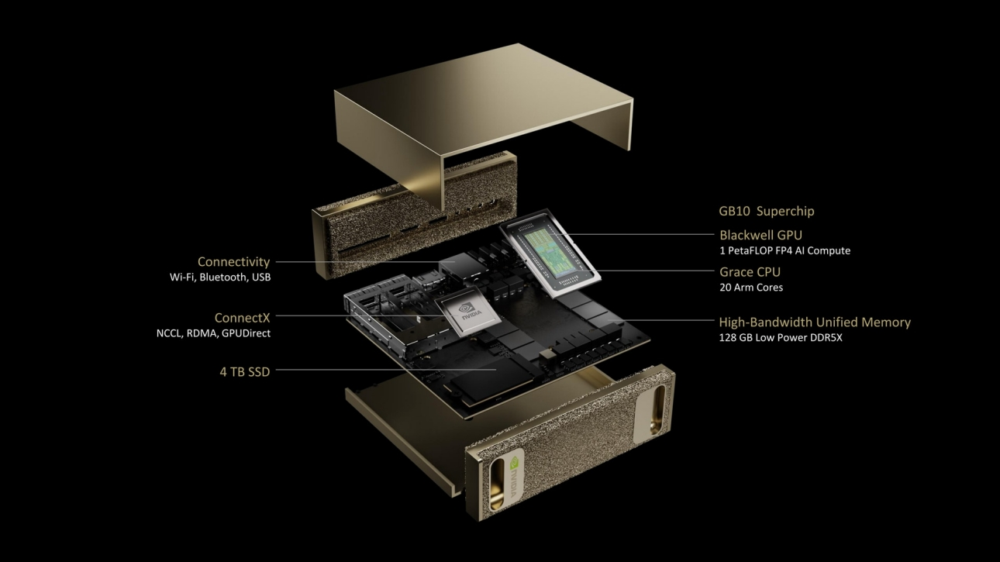

01
Soberanía del Dato
Cumplimiento estricto GDPR / LOPDGDD. Cero datos (expedientes, exámenes) abandonan el centro. La información alimenta la pedagogía, no a terceros.
Un proyecto pionero del IES Dr. Lluís Simarro para crear un ecosistema educativo soberano, predictivo y personalizado sin depender de la nube externa.
Cuatro principios innegociables que definen nuestra arquitectura.
Cumplimiento estricto GDPR / LOPDGDD. Cero datos (expedientes, exámenes) abandonan el centro. La información alimenta la pedagogía, no a terceros.
Modelos de código abierto ajustados específicamente a la terminología, normativas y necesidades exactas de nuestras familias profesionales.
Ejecución local garantizando respuestas instantáneas y un funcionamiento continuo del instituto, incluso ante caídas de la red externa.
Transición de un modelo de costes variables insostenibles (pago por token en la nube) a una inversión en infraestructura física amortizable.
Un clúster unificado que separa inferencia masiva de entrenamiento profundo.

Cuatro capas diseñadas para mover petabytes sin estrangular el aula.
Tras iterar entre modelos de 14B y 32B, la elección final: Qwen 3 80B · MoE 8-bits.
Soporta hasta 50 usuarios simultáneos (equivalente al uso intensivo de un claustro entero).
10–15 segundos de media para prompts complejos · 600–700 tok/consulta.
Garantía de que incluso el 5 % de las consultas más pesadas mantengan latencia pedagógicamente aceptable.
Cada departamento entrena su propio asistente basado estrictamente en su documentación oficial.
Ingesta masiva de normativas, apuntes y rúbricas históricas del departamento.
El sistema busca por contexto e intención, no por palabras clave.
El LLM local sintetiza una respuesta basada estrictamente en documentación oficial, evitando alucinaciones.
Pre-corrección de evaluaciones extensas y redacción de programaciones.
Generación instantánea de materiales adaptados (audio, infografías) para necesidades NEAE.
Cruce de datos orgánico para proyectos conjuntos (ej. Edificación + Informática).
ADAPTIVE LEARNING MODEL · Un tutor digital por estudiante.
Aplicación directa de los pilares RAG + Agentes en el primer curso del ciclo formativo de Desarrollo de Aplicaciones Multiplataforma. Entrenado, servido y corregido al 100 % dentro del centro con los datos del departamento de Informática.
Apuntes, ejercicios resueltos, exámenes históricos y rúbricas del departamento de Informática pasan a una base vectorial privada.
El LLM crea N variantes únicas por alumno, con enunciados adaptados al nivel, la unidad trabajada y el estilo del docente.
Evaluación automática de código en sandbox y teoría frente a rúbrica. Feedback granular por pregunta y ejercicio.
El profesor revisa, ajusta y firma las notas. El modelo nunca decide en solitario — trazabilidad completa.
Garantía didáctica: el LLM nunca emite la calificación final. El docente mantiene la autoridad completa, con trazabilidad de cada respuesta y un log auditable de la intervención de la IA.
Laboratorio de pruebas y formación del profesorado nacional.
Exportación del modelo RAG y Agentes a empresas e institutos autonómicos.
Escalar la arquitectura hacia centros de datos públicos.
No financiamos solo la transformación de un instituto; estamos construyendo el código fuente para una educación pública soberana, inteligente y equitativa.
Escanea para acceder a los canales, plataformas y proyectos paralelos del equipo.
Formación práctica en inteligencia artificial aplicada al aula y al profesorado.
@ia-para-docentes ↗Tecnología, cloud y herramientas digitales para la formación profesional del siglo XXI.
@aulaenlanube ↗Preparación de oposiciones potenciada con inteligencia artificial — temarios, casos y simulacros adaptativos.
oposicionesia.com ↗Ecosistema de aplicaciones educativas listas para desplegarse en el aula y en casa.
apps-educativas.com ↗